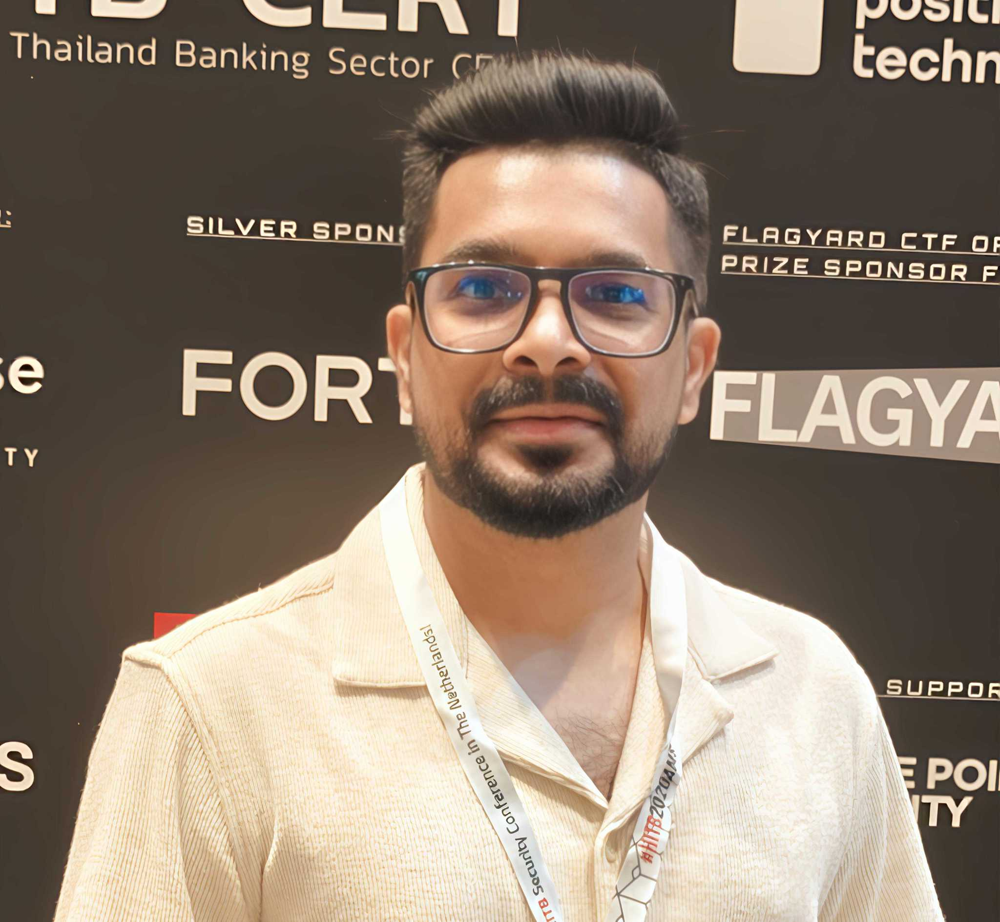
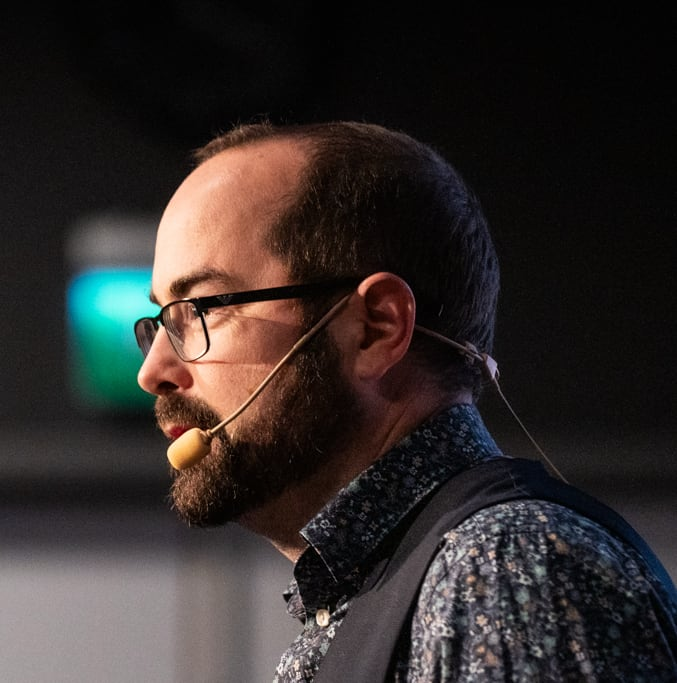

Meet the industry experts sharing their knowledge at AppSec Days Singapore 2025
More distinguished speakers to be announced soon!
Security Researcher
Security Researcher
Security Researchers
This talk will explore the growing risks in software supply chain security, especially in the wake of high-profile incidents like Log4Shell. Based on large-scale in-house research, it investigates publicly available open-source assets—including over 2 million NPM packages, 60,000 WordPress plugins, and a wide range of Ruby Gems—to uncover exposed secrets such as AWS keys, Google credentials, and 30+ other sensitive types.
These exposures, whether accidental or intentional, pose a serious risk to any developer or organization using these components as dependencies. The session will present the scale and impact of the findings, along with practical ways to detect and prevent such leaks. Attendees will also learn how to integrate automated checks into their CI/CD pipelines to secure their supply chains and avoid becoming the next link in a compromised system.
Senior Security Consultant
Principal Security Consultant
Senior Security Consultant & Principal Security Consultant, PastelOps
iOS reversing often feels more painful than it should be. Compared to Android, challenges like Mach-O binaries, stricter environments, and runtime protections often discourage testers or make them avoid it altogether. The speaker has faced these same roadblocks—where persistence alone wasn’t enough to make progress.
This talk will cover a practical workflow for iOS reversing, developed from real-world mobile assessments and leveraging open-source tools such as Frida, Ghidra, and a jailbroken iPad. It will walk through how to decompile and navigate Mach-O binaries, hook functions in running apps, and work around common issues like obfuscation and anti-debugging protections.
The goal is to make iOS reversing more approachable. Attendees will walk away with ready-to-use Frida snippets, a clear and repeatable workflow, and practical tips to overcome frustrating roadblocks—without spending extra money or wasting hours going in circles.
Chief Technology Officer, KAZIMI
Modern apps often rely heavily on advertising for revenue. To enable this, ad networks and analytics providers require their SDKs to be embedded within the app itself. However, these SDKs frequently contain exploits, vulnerabilities, invasive tracking mechanisms, and a range of questionable behaviors. This talk will uncover the techniques used by these SDKs and expose how much of the industry consistently prioritizes profits over the privacy and security of actual users.

Lead Security Engineer, Coupa Software
Sr. Security Engineer, Coupa Software
Lead Security Engineer & Sr. Security Engineer, Coupa Software
This talk will explore the hidden risks of deploying AI systems in critical functions like fraud detection, credit scoring, and customer support. As these models continuously learn from massive and ever-changing datasets—often pulled from public sources—they become vulnerable to subtle yet dangerous manipulations. The session will dive into how attackers can poison as little as 0.1% of training data, upload "trusted" but malicious models, or craft prompts that bend the model's behavior without triggering alarms.
Through live demos, the audience will witness a credit-risk model being flipped from "deny" to "approve" and a customer service LLM being transformed into a malware tutor. The session will conclude with a hands-on safety toolkit covering signed model manifests, secure download practices, prompt guardrails, and real-time anomaly monitoring—practical steps to help organizations ensure their AI continues to serve them, not sabotage them.

Security Researcher
This talk will explore the uncomfortable truth behind multi-factor authentication (MFA)—often hailed as the ultimate fix for authentication-related security issues. While MFA adds a layer of protection beyond passwords, attackers have evolved just as quickly. With over a million MFA bypass attacks occurring every month, it's clear that this trusted safeguard isn't foolproof. Through live demonstrations, this session will showcase how modern threat actors seamlessly bypass MFA and take over accounts in real time. Attendees will gain insight into advanced attack techniques and learn why relying solely on MFA may not be enough to sleep soundly at night.
Leader of Security Detection, Apex Security
Enterprise AI agents sit at the center of modern corporate workflows, wired into RAG pipelines and privileged data stores. While headlines focus on external attackers, insider misuse has quietly multiplied. This talk unveils a new OWASP taxonomy for enterprise agents, dissects a real‑world Fortune 500 breach in which leaked earnings data rocked the C‑suite, and closes with concrete controls security teams can deploy today to keep their agents, and their organizations safe.
DevSecOps Engineer at Intangles Lab
This talk will explore how to build a fully secure CI/CD pipeline using only open source tools—proving that strong security doesn't have to come with a hefty price tag. It will walk through the entire software delivery process, from coding to deployment on Kubernetes, demonstrating how to integrate tools like Jenkins, GitHub, Argo CD, and popular open source security solutions including Semgrep, Trivy, OWASP ZAP, Gitleaks, and Falco. Attendees will see how to scan for bugs, vulnerabilities, secrets, and misconfigurations at every stage. By the end of the session, they'll understand how open source tools can effectively shift security left and safeguard modern workloads.
Director of Delivery Operations at SecurityBoat
This talk will explore how startups can embed security early without compromising speed or innovation. In fast-paced environments where shipping quickly is the top priority, security often takes a back seat—until it's too late. Drawing from real-world experience with high-growth startups across various industries, this session presents a practical playbook to tackle security from day one. It will cover common pitfalls that lead to early security debt, lightweight practices that align with agile development, and proven frameworks that work even with small, busy teams. Attendees will leave with actionable strategies to build security into their products—before it becomes an expensive problem.
Security Engineer at Yandex Cloud
This talk will explore key security risks in AWS Lambda functions and how attackers can exploit them if not properly secured. It will begin with a quick overview of Lambda's structure and benefits—such as scalability and reduced operational overhead—before diving into a NIST 830-based security assessment approach. The session will highlight critical risks including RCE backdoors, environment variable leaks, SSRF, and fork bombs, along with their real-world impact, such as excessive billing.
Live demos will showcase command injection and SSRF attacks in action. Attendees will leave with practical mitigation strategies like input validation, IAM role separation, and setting up effective logging and alarms to strengthen their serverless security posture.